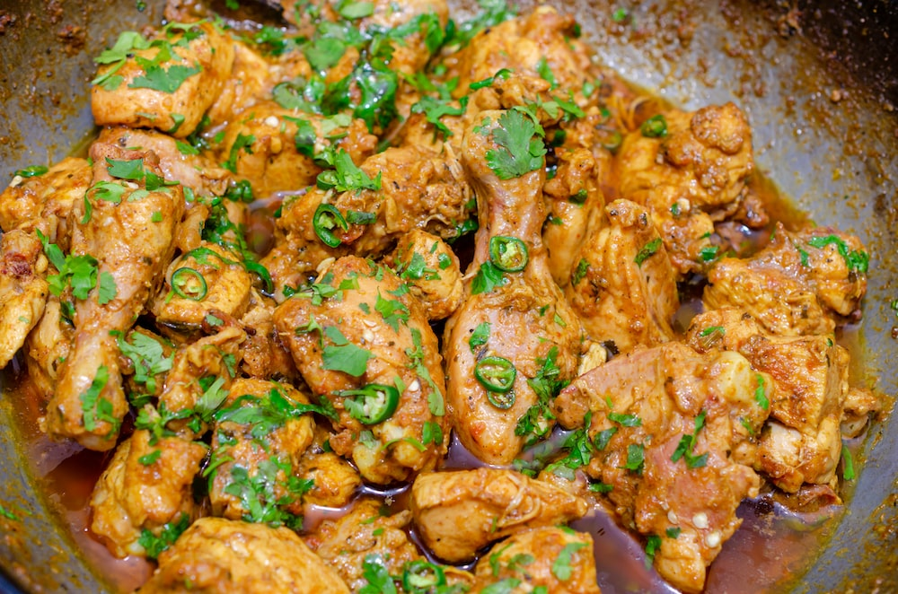

Chicken Karahi

Description
Instructions
- Heat the cooking oil in a karahi or a deep, heavy-bottomed pan over medium-high heat.
- Add the finely chopped onions and sauté until they turn translucent and slightly browned.
- Add the ginger and garlic paste, and sauté for another minute until the raw smell disappears.
- Add the chicken pieces and fry them until they turn white on all sides.
- Stir in the chopped tomatoes and cook until they become soft and the oil starts to separate from the mixture.
- Add the green chilies, red chili powder, turmeric powder, ground cumin, and ground coriander. Mix well.
- Cover the pan and let the chicken cook on low to medium heat for about 15-20 minutes, or until it's cooked through and tender. Be sure to stir occasionally to prevent sticking.
- Check the seasoning and add salt to taste. Adjust the spice level by adding more red chili powder if desired.
- Garnish the chicken karahi with fresh coriander leaves.
- Serve hot with naan or roti.
Ingredients
- 500g of Chicken
- 2 tablespoons cooking oil
- 1 large onion
- 2-3 tomatoes, chopped
- 2-3 green chilies
- 1 teaspoon ginger paste
- 1 teaspoon garlic paste
- 1 teaspoon red chili poweder
- 1/2 teaspoon turmeric powder
- 1 teaspoon ground coriander
- Salt to taste
- Fresh coriander leaves for garnish